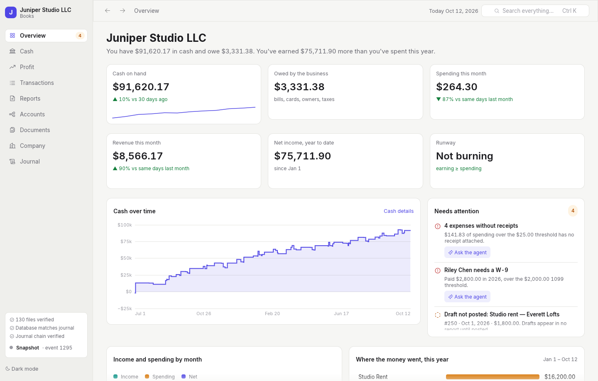
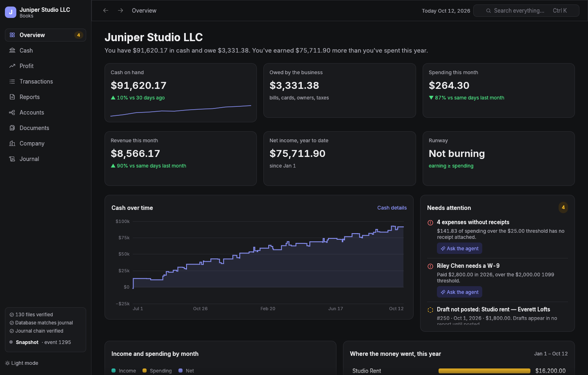
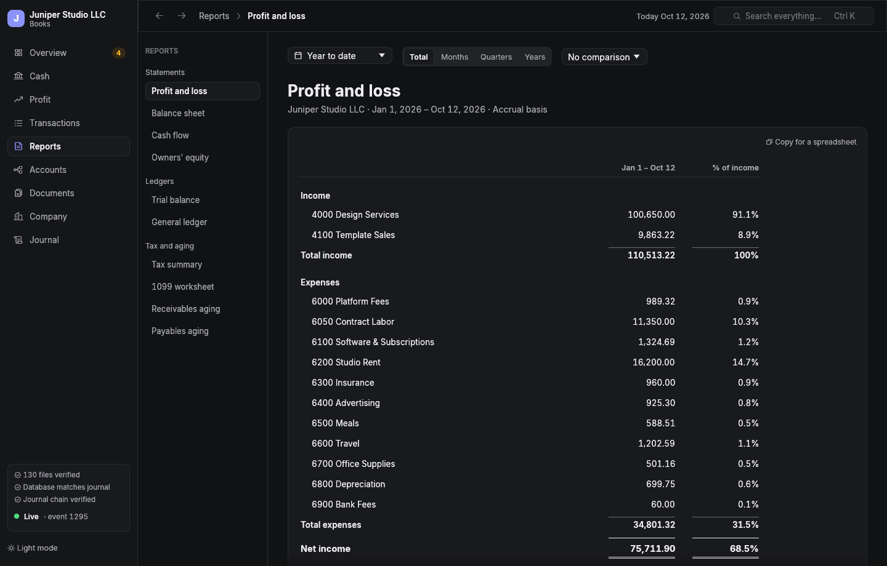
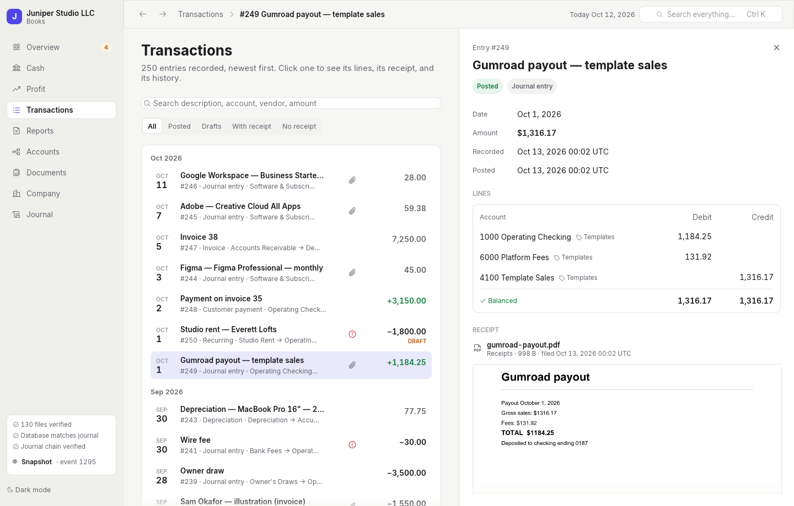

wanderbooks is real double-entry accounting that lives in a folder you own, kept by an AI bookkeeper you talk to. It finds your receipts, records and categorizes everything, fixes its mistakes the way an accountant would, and hands your CPA a clean package. No subscription. No lock-in. Every number traceable to its receipt.
curl -fsSL https://wanderbooks.ai/install.sh | sh -s -- ~/Books/YourCompany
One line installs everything, makes your books, and starts your bookkeeper. Linux and macOS; Windows via WSL2. Free and open source; you bring Claude.


The desktop view of a demo company. It leads with the answer, then the evidence.
Your bookkeeper is Claude, working through an accounting engine that won't let it be wrong. Talk to it the way you'd talk to a good bookkeeper. It does the work, shows you the result, and waits for your OK before anything is posted.
Searches your inbox, files the receipt as a PDF, drafts the entry with the right accounts, and shows you the preview.
Imports the transactions as drafts, proposes an account for each from how you've booked them before, and asks about the ones it isn't sure of.
Reverses the entry and records it correctly. Nothing is ever erased; the history shows exactly what changed and why.
Traces the number to the entries and receipts behind it, and tells you what's new.
Works it out from your actual cash, burn, and what's coming in, and shows its math.
Checks the threshold for the year, whether payments were by card, and whether her W-9 is on file.
Checks for missing receipts and unposted drafts, reconciles to your bank statement, posts depreciation and amortization, and closes the period.
Builds the CPA package: every statement, the ledgers, the tax summary, the 1099 worksheet, and every receipt, indexed.
Rebuilds your history from QuickBooks' exports and checks every statement against QuickBooks, to the cent, before you cancel.
QuickBooks rents you access to your own financial history, raises the rent every year, and makes leaving painful. You still do the bookkeeping yourself, in forms. wanderbooks turns that around.
| wanderbooks | QuickBooks Online | |
|---|---|---|
| Where your books live | A folder on your computer, under git. Plain, documented files. | Intuit's servers. You get access while you pay. |
| What it costs | Nothing. Open source, forever. You bring your Claude plan. | A monthly subscription per company, and the price keeps rising. |
| Who does the bookkeeping | An AI bookkeeper: receipts, entries, categories, fixes, closes. | You do, in screens and forms. Or you pay someone. |
| Receipts | Required over a threshold you set, enforced on every entry, shown right beside it. | Optional attachments. |
| Audit trail | Every change is a hash-chained event; nothing is ever edited or erased. | An audit log inside their app. |
| Leaving | Your files are the books. Standard exports any time, including QuickBooks formats. | Export what you can, and hope. |
Can it really replace QuickBooks? For most small businesses, yes. Here's exactly what you get, and what you don't (yet).
Your CPA doesn't need QuickBooks. They need your numbers, the evidence behind them, and files their software can read. wanderbooks gives them more than a QuickBooks login ever did.


The desktop view is read-only and live: whatever your bookkeeper posts appears in a fraction of a second. Click any amount on a statement for the transactions behind it. Click a transaction for its lines, the receipt itself, and every event in its history.
An AI is keeping your books, so the books have to be impossible to quietly get wrong.
Every entry balances exactly; money is exact decimal, never floating point. Posted entries are permanent; corrections are reversing entries. The receipt rule is enforced by the server, not left to the AI's judgment.
Every change is an event hash-chained to the one before. The database is checked against the journal table by table, and rebuilt if it ever drifts; every receipt is checked against its hash. The desktop view shows you the result.
The bookkeeper previews every posting before it happens and waits for you. The desktop view can't change anything at all.
The one line at the top does everything: installs Rust if you don't have it, builds wanderbooks, makes your books folder with the bookkeeper wired in, and starts a session to set up your company.
Needs a C compiler and git (build-essential on Debian and Ubuntu). The installer tells you if anything's missing.
Needs Apple's command line tools: xcode-select --install.
Run it inside WSL2 (wsl --install, then Ubuntu). On Windows 11 the desktop view opens as a normal window. Native Windows is on the way.
Already installed? wanderbooks new ~/Books/AnotherCompany. In a books folder, just agent starts your bookkeeper and just gui opens the desktop view.
wanderbooks is free and open source (MIT or Apache-2.0). Your bookkeeper is Claude, through Claude Code, which comes with a Claude Pro or Max plan or runs on API credits.
You need to paste one command into a terminal, once. After that you talk to your bookkeeper in plain English and read your books in the desktop app.
Connect your email to Claude (an email connector like Gmail's, or the Claude browser extension with your mail open) and ask. It searches for the vendor and amount, files one clean PDF per receipt, and attaches it to the entry. It asks before downloading anything, and it never types passwords or account numbers.
Your books are files on your computer: a journal, your receipts, and a settings file, in a git repository you control. Nothing is uploaded to wanderbooks; there is no wanderbooks server. What your bookkeeper reads to help you goes to Anthropic like any Claude conversation.
Every posting is previewed before it happens. If something slips through, it's corrected the way accountants do it, with a reversing entry, so the mistake and the fix are both on the record. The engine itself refuses anything that doesn't balance, anything without a required receipt, and anything in a closed period.
Real double-entry accounting, with the rules enforced in code: exact decimal money, balanced entries, immutable posting, closes, depreciation, accrual or cash basis. Its statements are tested against hand-computed numbers, golden files, and property tests.
Yes. Export your chart of accounts, journal, and reports, and ask your bookkeeper to move you over. It rebuilds the history and compares every statement against the old system, to the cent, before calling it done. Keep the old system read-only until you've closed a month in wanderbooks.